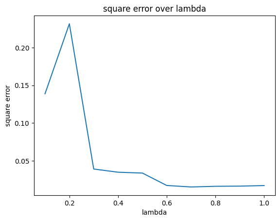
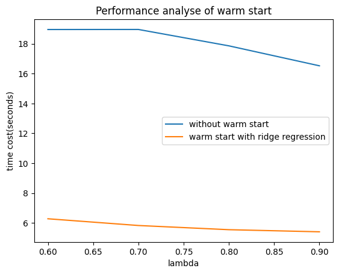
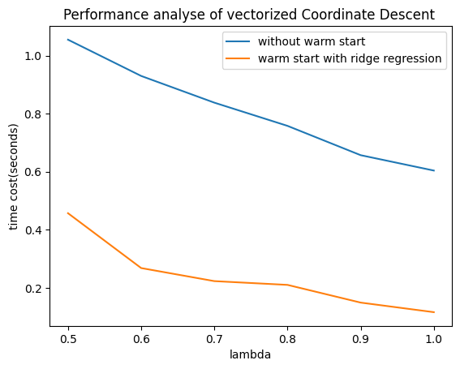

min_lambda = 0 min_loss = 1e100 optimized_theta: np.ndarray lambda_list = [] loss_list = [] for i inrange(-8, 3): Lambda = 10 ** i w_opt = minimize(ridge(Lambda), w) loss = compute_loss(w_opt.x) if loss < min_loss: min_loss = loss optimized_theta = w_opt.x min_lambda = Lambda lambda_list.append(Lambda) loss_list.append(loss)
ifnot show_info: return min_loss, optimized_theta
plt.plot(lambda_list, loss_list) plt.xscale("log") plt.yscale("log") plt.xlabel("regelurization lambda") plt.ylabel("loss") plt.title("loss over lambda in ridge regression") plt.show()
print("Choose lambda: {0} \t\t min loss: {1}".format(min_lambda, min_loss))
true_zero_count = 0 thresh_hold = 1e-3 small_count = 0 for ele in optimized_theta: if ele == 0: true_zero_count = true_zero_count + 1 elif ele <= thresh_hold: small_count = small_count + 1 print("True zero component number is {0}, " "component smaller than {1} is {2}, " "over {3} component" .format(true_zero_count, thresh_hold, small_count, optimized_theta.shape[0]))
print("----------------") print("final theta by ridge regression is: \n", optimized_theta) return min_loss, optimized_theta
lambda is 0.1 diff is 0.06008851755771311 steps:1000/1000
lambda is 0.2 diff is 0.06899627007686944 steps:1000/1000
lambda is 0.3 diff is 0.08325210089294723 steps:1000/1000
lambda is 0.4 diff is 0.09547926436898656 steps:1000/1000
lambda is 0.5 diff is 0.0648970367967063 steps:1000/1000
lambda is 0.6 diff is 0.04435037153736939 steps:1000/1000
lambda is 0.7 diff is 0.013912975533066193 steps:1000/1000
lambda is 0.8 diff is 0.0026355262109854036 steps:1000/1000
lambda is 0.9 diff is 0.0003978676094541049 steps:1000/1000
lambda is 1.0 diff is 5.149093572631713e-05 steps:1000/1000
min loss: 0.015307889774195045, lambda:0.7

Find how many true zero
1 2 3 4 5 6 7 8 9 10 11 12 13 14 15 16 17 18
deffind_true_zero_count(origin_theta: np.ndarray, min_theta: np.ndarray) -> [int, int]: origin_count = 0 min_count = 0 for ele in origin_theta: ifabs(ele) <= 1e-5: origin_count += 1 for ele in min_theta: ifabs(ele) <= 1e-5: min_count += 1 return origin_count, min_count
origin_count, min_count = find_true_zero_count(origin_theta, min_theta) print("origin theta has {0} true zero, theta of min loss's lambda has " "{1} true zero with tolerance: {2}\n" "{3} zero component are estimated as non-zero" .format(origin_count, min_count, 1e-5, origin_count - min_count))
origin theta has 65 true zero, theta of min loss's lambda has 53 true zero with tolerance: 1e-05
12 zero component are estimated as non-zero
Homotopy Method
Warm start with ridge regression should let lasso converge more quickly
lambda is 0.1 diff is 0.0009953931916886843 steps:835/1000
lambda is 0.2 diff is 0.000988153783945539 steps:700/10000
lambda is 0.3 diff is 0.000998791003312332 steps:576/10000
lambda is 0.4 diff is 0.0009936626477643623 steps:460/1000
lambda is 0.5 diff is 0.000993502247473554 steps:376/1000
lambda is 0.6 diff is 0.000989000375419477 steps:326/10000
lambda is 0.7 diff is 0.000989182650121108 steps:284/10000
lambda is 0.8 diff is 0.000982675865428887 steps:260/1000
lambda is 0.9 diff is 0.0009678978659599484 steps:222/1000
lambda is 1.0 diff is 0.0009944533872836038 steps:188/1000
min loss: 0.016342880999627007, lambda:0.9
compare time between warm start and non warm start
lambda is 0.6 diff is 0.009898263871577587 steps:167/1000
lambda is 0.6 diff is 0.04435037153736939 steps:1000/1000
lambda is 0.7 diff is 0.009957528853492322 steps:148/1000
lambda is 0.7 diff is 0.013912975533067251 steps:1000/1000
lambda is 0.8 diff is 0.009924335276691317 steps:133/1000
lambda is 0.8 diff is 0.00980506755009518 steps:941/1000
lambda is 0.9 diff is 0.00911076495458803 steps:121/1000
lambda is 0.9 diff is 0.00997934261343577 steps:872/1000

vectorize coordinate descent
Vectorie computation procedure by transfering it to matrix computation will improve performance significantly Improve around 18x ~ 36x compared with above
loss of ridge regression with optimized lambda is 0.0387
lambda is 0.5 steps:1845/10000 run time:1.0552 seconds loss:0.0177
lambda is 0.5 steps:793/10000 run time:0.4571 seconds loss:0.0177
lambda is 0.6 steps:1608/10000 run time:0.9302 seconds loss:0.0170
lambda is 0.6 steps:473/10000 run time:0.2681 seconds loss:0.0170
lambda is 0.7 steps:1451/10000 run time:0.8382 seconds loss:0.0165
lambda is 0.7 steps:393/10000 run time:0.2231 seconds loss:0.0165
lambda is 0.8 steps:1327/10000 run time:0.7582 seconds loss:0.0164
lambda is 0.8 steps:370/10000 run time:0.2100 seconds loss:0.0164
lambda is 0.9 steps:1157/10000 run time:0.6571 seconds loss:0.0164
lambda is 0.9 steps:263/10000 run time:0.1490 seconds loss:0.0164
lambda is 1.0 steps:1061/10000 run time:0.6041 seconds loss:0.0172
lambda is 1.0 steps:203/10000 run time:0.1160 seconds loss:0.0172

Derive Coordinate Descent
Q1
if $x=\vec{0},w=\vec{0}$
Q2
define:
Q3
if $\thetaj \gt 0$, then $d(\theta_j)=a_j\theta_j-c_j+\lambda$. If f is convex then $d(\thetaj)=0$ can minimize f, so that $argmin{\theta_j}d(\theta_j)=\frac{c_j-\lambda}{a_j}=-\frac{1}{a_j}(\lambda-c_j)$ condition of $\theta_j \lt 0$ is the same : $d(\theta_j)=\frac{1}{a_j}(\lambda+c_j)$